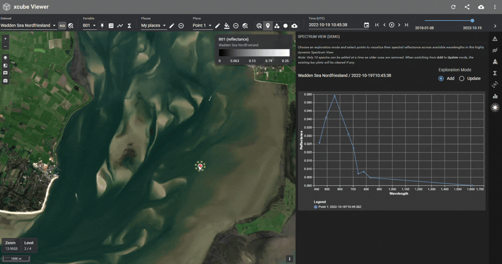
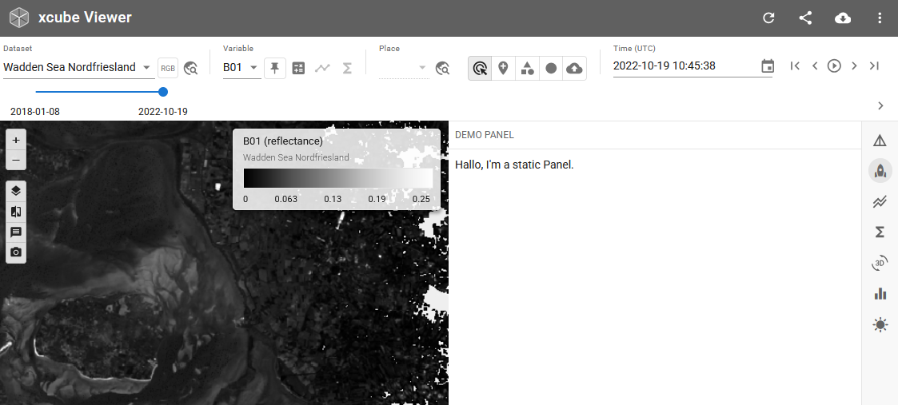
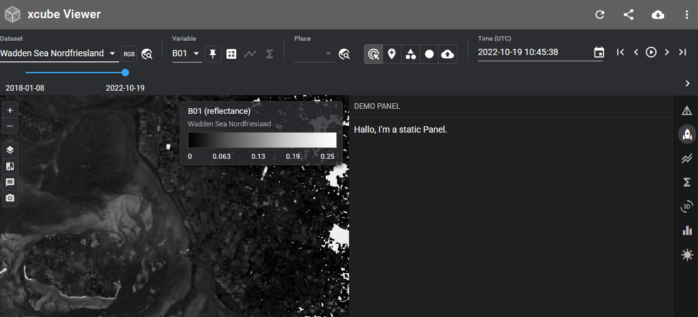
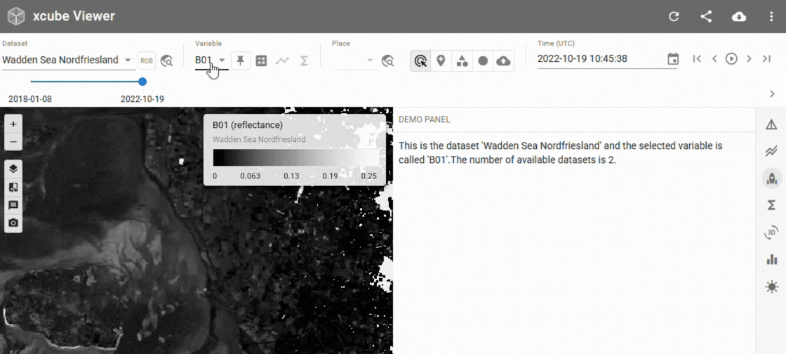
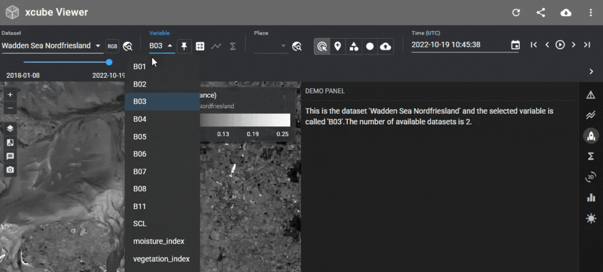

Custom sidebar panels¶

Starting with xcube Server 1.8 and xcube Viewer 1.4 it is possible to enhance xcube Viewer by custom sidebar panels programmed in Python and published by xcube Server.
For this to work, you (as a service provider) can now configure xcube Server to load
one or more Python modules that provide UI-contributions of type
xcube.webapi.viewer.contrib.Panel.
Users can create Panel objects and use the two decorators
layout() and callback() to implement the UI and the interaction
behaviour, respectively. The new functionality is provided by the
Chartlets Python library.
Available State Properties¶
xcube Viewer exposes some of its application state properties to Python
extension components such as panels (panel = Panel(...)). The current values of state
properties can be accessed via Input and State channels you define for your
extension component decorators, i.e., @panel.layout(...) and/or @panel.callback(...).
Info
To check the available StateProperties of your specific Viewer check the Developer Reference, that is linked in the header of the Viewer.
- To trigger a callback call when a state property changes use the input syntax
Input("@app", "<property>"). - To just read a property from the state use
State("@app", "<property>"). This will not trigger a call to your callback.
The following state properties of xcube Viewer's (xcube-viewer>=v1.5.1) are made available
to extensions:
| Property | Python Type | Description |
|---|---|---|
| selectedDatasetId | str | None | The identifier of the currently selected dataset. |
| selectedDatasetTitle | str | None | The title of the currently selected dataset. |
| selectedVariableName | str | None | The name of the currently selected variable within the selected dataset. |
| selectedDataset2Id | str | None | The identifier of the dataset that contains the pinned variable. |
| selectedDataset2Title | str | None | The title of the dataset that contains the pinned variable. |
| selectedVariable2Name | str | None | The name of the pinned variable. |
| selectedPlaceGeometry | dict[str, Any] | None | The geometry of the currently selected place in GeoJSON format. |
| selectedPlaceId | str | None | The identifier of the currently selected place. |
| selectedPlaceGroup | list[dict[str, Any]] | The list of dataset place group and user place groups. |
| selectedTimeLabel | str | None | The currently selected UTC time using ISO format. |
| themeMode | str | The appearance mode of the UI. Either "light" or "dark". |
How to add a panel¶
-
Write a Python module that defines one or more contributions — each one becomes a custom panel in the viewer's sidebar (see Examples).
-
Create the Extension object in
<folder-to-my-panels>/__init__.py:from chartlets import Extension from .my_panel import panel as my_panel ext = Extension(__name__) ext.add(my_panel) -
Register the module in the xcube Server configuration (
server-config.yaml).Viewer: Augmentation: Path: "" Extensions: - <folder-to-my-panels>.ext -
Start xcube-server as usual — the panels will appear in the sidebar alongside the built-in Info, Time Series, and Statistics panels.
Examples¶
Static panel¶


Create <folder-to-my-panels>/my_panel.py:
from chartlets import Component
from chartlets.components import Box, Typography
from xcube.server.api import Context
from xcube.webapi.viewer.contrib import Panel
panel = Panel(__name__, title="Demo Panel", position=1, icon="rocket")
@panel.layout()
def render_panel(
ctx: Context,
) -> Component:
info_text = Typography(
id="info_text", children=["Hallo, I'm a static Panel."]
)
return Box(
children=[
info_text,
],
)
Reactive panel¶


from chartlets import Component, Input, Output, State
from chartlets.components import Box, Typography
from xcube.server.api import Context
from xcube.webapi.viewer.contrib import Panel, get_datasets_ctx
panel = Panel(__name__, title="Demo Panel", position=2, icon="rocket")
@panel.layout(
State("@app", "selectedDatasetTitle"),
State("@app", "selectedVariableName"),
)
def render_panel(
ctx: Context,
dataset_id: str,
variable_name: str,
) -> Component:
info_text = Typography(
id="info_text",
children=update_info_text(ctx, dataset_id, variable_name),
)
return Box(
style={
"display": "flex",
"flexDirection": "column",
"width": "100%",
"height": "100%",
"gap": "6px",
},
children=[
info_text,
],
)
@panel.callback(
Input("@app", "selectedDatasetTitle"),
Input("@app", "selectedVariableName"),
Output("info_text", "children"),
)
def update_info_text(
ctx: Context,
dataset_id: str,
variable_name: str,
) -> list[str]:
ds_ctx = get_datasets_ctx(ctx)
ds_configs = ds_ctx.get_dataset_configs()
return [
f"This is the dataset '{dataset_id}' and the selected variable is called '{variable_name}'."
f"The number of available datasets is {len(ds_configs)}."
]
Available components¶
Chartlets provides a growing set of components you can return from contributions. Refer to the Chartlets component reference for the full list; commonly used ones include:
Accordion,Button,Checkbox,RadioGroupSlider,Switch,Table,Tabs,Typography,VegaChart